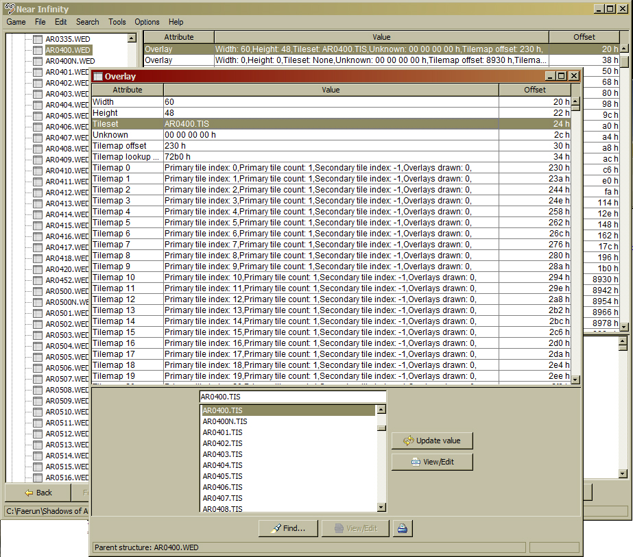

| Version History |
| Introduction |
| Cheating in the Night wed |
| So Now You want To Add a Night Area |
Version History
1.0 Initial release Introduction
Cheating in the Night wed So Now You want To Add a Night Area
The following two tricks require that you already have a good grasp of creating an area as outlined in 'Area Basics'. 'So Now You want To Add a Night Area' contains instructions rather than a walkthrough; the detailed information can be found in 'Area Basics' and 'Doors'.
| Introduction |
| So Now You want To Add a Night Area |
This can only be done if the day and night .weds are identical and this statement includes any doors. You will only be able to do this if, for example, you have already fully-prepared the night .tis file complete with .tis doors or, alternatively, the night .tis does not have any doors at all. The type of situation I have run into where this scenario has been true is when I already have a fully working day/night area and I have needed to change part of the background. For how to do this, see 'Editing the Finished TIS File' below; specifically the section on replacing the complete main tileset.
If you have a working day area and decide that you want to add a night area sometime later, see 'So Now You Want To Add A Night Area'.
Make a copy of the day .wed file and call it [areaname]n.wed. Open the new n.wed file in NI and locate the tileset entry - this will be the first Overlay line if you have more than one overlay. (Please note that the screenshots here are of the Slums District and are to illustrate the necessary steps). The tileset entry will still have the name of the dat .tis in it.
This will bring up the Overlay dialog.
This will display the tileset selector.
|
 Image 1 - The tileset selector |
You can achieve the same end by copying and renaming the day .wed file and then changing the night .wed overlay inside DLTCEP. I just find it easier this way.
| Introduction |
| Cheating in the night WED |
This is really aimed at the time when you have created an area that you originally thought would work for both day and night (no Extended Night) but then you find that the area is plainly the wrong colour when the Infinity Engine changes the time of day. Effectively what we are about to do is replace the day tiles with the night tiles, then rename the files to suit. Before you begin, you will need to have created the night area bitmap and, if required, any night door bitmaps.
At this point if you run the area in the game, you should find that you are now seeing the night tilesets but still with the day lightmap.
That's it - you've just added a night area the quick way.
|
Tutorial written by Yovaneth, apprentic'd at Candlekeep during the Bhaalspawn Troubles. Post it where you will but please don’t take credit for what you have not written. |